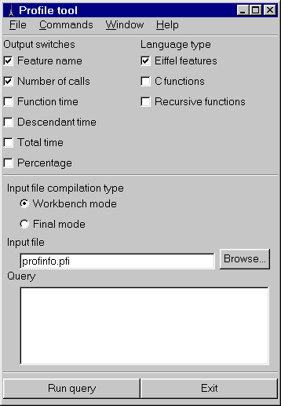
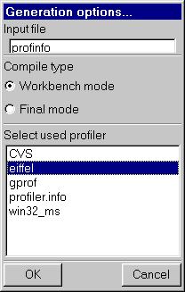

1 INTRODUCTIONISE Eiffel offers EiffelProfile, a profiling mechanism enabling Eiffel users to analyze the run-time properties of their systems and in particular the cost of each routine: number of calls, time spent. EiffelProfile is a precious tool to understand systems and optimize them. This document describes how to use EiffelProfile. It is divided into the following sections:
2 EIFFELPROFILE: GENERAL ORGANIZATIONEiffelProfile works on the basis of one or more Execution Profiles: files containing information about an execution of your system, and files generated by that execution. EiffelProfile lets you analyze the Execution Profiles to obtain information about the calling and timing patterns of your system. To ensure that an execution of your system will generate an Execution Profile, you must compile it using an appropriate Lace option: profile. You may choose to profile the entire system, or only some specific clusters and classes. For the time analysis you can use either ISE Eiffel's own timing mechanism or an external profiler such as GNU's gprof or Pure Atria's Quantify. An execution of the system will generate an internal file containing the appropriate information. You then run a conversion tool to transform this file into an Execution Profile. Once you have generated one or more Execution Profiles, EiffelProfile provides you with a powerful query language enabling you to produce the information that you need for the purpose of your analysis. The following sections detail the steps in this process. The mechanisms of EiffelProfile exist under two interfaces:
This version of the manual details both the textual and the graphical interface; the various commands are available under the (P) Profile option of es4 -loop. (For a general presentation of es4 -loop see Eiffel: The Environment.) The EiffelBench version offers exactly the same facilities, in graphical form.
3 LACE OPTIONS FOR INSTRUMENTING A SYSTEMTo obtain an Execution Profile you must run your system after compiling it with the appropriate Lace options. The resulting compiled version of the system is said to be instrumented, meaning that it includes special instructions that will generate the profiling information during execution. EiffelProfile supports two modes of profiling:
3.1 The profile optionYou will specify profiling through the profile option in your Ace file. The option is in the form of:
where profiler_tool indicates the desired form of profiling:
3.2 Including the option
For internal profiling, you can specify the profile option, like many other Lace options such as, trace and debug at the system, cluster or class level.
This turns on profiling for all classes or the root_cluster except SOME_CLASS, and turns it off for all other clusters (this would be the default). For external profiling, you will turn on the option, under the form profile (profiler_tool), at the global default. However, even if you specify it at the Cluster level, the Eiffel profiling will be disabled. 3.3 Generated filesIf the profile option has been set, execution of the system will generate profiling information in a file which resides in one of the subdirectories of the project directory:
· EIFGEN|W_code in workbench mode (melting or freezing). (As usual in ISE Eiffel documentation, the vertical bar | stands for the path delimiter: / on Unix, \ on Windows, the equivalent convention on VMS.) For internal profiling, the name of the file is profinfo. For external profiling, it is determined by the external profiler being used. 4 PRODUCING AN EXECUTION PROFILEOnce an execution of an instrumented system has generated the proper file, you must process it through a profile converter to produce the Execution Profile. The need for the converter comes from the various formats that profilers use to record run-time information during an execution; a simple Profiler Configuration File enables you to describe the format used by any particular profiler. 4.1 Setting up the Profiler Configuration FileThe Profiler Configuration File is a file found in the directory $EIFFEL5|bench|profiler where $EIFFEL5 is the location of the Eiffel installation. The name of the Profiler Configuration File in that directory is eiffel for internal profiling and, for external profiling, the name of the profiler tool as specified in the profiler option. The Profiler Configuration File describes the structure of the file generated by the profiler. Here is a complete example showing the various options that may be specified: number_of_columns: 7 -- Number of columns in the file. index_column: 1 -- Column where the index is stored. function_time_column: 3 -- Column where the time spent in the function is stored. descendent_time_column: 4 -- Column where the time spent in the descendents of a function is stored. number_of_calls_column: 5 -- Column where the number of calls to a function is stored. function_name_column: 6 -- Column where the name of the function is stored. percentage_column: 2 -- Column where the percentage of time spent in the function is stored. second_percentage_column: 0 -- Column where the second percentage of time spent in the function is stored. generates_leading_underscore: no -- Says whether the profiler generates leading underscores (yes) or not (no). As in Eiffel and Lace, -- introduces a comment, which has no effect on the specification. If one of the xxx_column options has value 0, this means that the files generated by the given profiler contain no such column. The order of the options is not significant.
4.2 Running the converter under EiffelBenchTo run the profile converter under EiffelBench, in the Profile tool, select in the Command sub-menu Generate. A new window will appear and you will have to select:
When you have checked these three fields, click on the ok button to launch the conversion. This will generate an Execution Profile stored in a file with the extension .pfi.
4.3 Running the converter under es4
To run the profile converter under the command-line interface, use the (G) Generate
command in the (P) Profile submenu of es4 -loop. This will generate an Execution Profile, stored in a file with the extension .pfi.
· Name of file to be converted (default: profinfo). You can also type in the arguments directly without waiting to be prompted, as in command => g profinfo freeze eiffel
5 THE QUERY MECHANISM UNDER EIFFELBENCH5.1 The Profile tool windowThe Profile tool window looks like the following:  5.1.1 Setting switchesTwo sets of switches can be seen. It is useful to select what kind of information is relevant to you. 5.1.1.1 Column output switchesEach switch turns off or on the corresponding column output. You have to toggle off or on depending upon what you would like to see in the result of the computation. Here is the explanations of each switch:
5.1.1.2 Profiled languages switchesThese switches enable you to specify the language to which querying should be applied. If you select only one language, the query result will not contain any information about routines written in the other language. The default is Eiffel only.
5.1.2 Loading Execution Profiles
5.2 Running a query
When running a query, you are able to type a complete query. After pressing the Run button, a new window will be displayed to show the result of the query. The total query can be either a single one or a set of subqueries separated by one of the two operators 'or' or 'and'.
operator is one of: <, >, <=, >=, =, /=. in and value is one of:
5.3 Viewing the result in the Profile query windowThe query result window looks like
Note: all features, classes and clusters are still clickable in this screen. 5.3.1 Refining queriesThe following mechanisms enable you to specify more precisely what type of information is relevant. 5.3.1.1 Adding subqueriesTo refine your search, you are able to run subqueries. First, type a query. This query must follow the query syntax. When you are ready, press one of the 'and' or 'or' buttons. This sets the boolean operator that will be added beetween the active query and the new subquery you are adding. The result is then computed and displayed when you press the Run button. 5.3.1.2 Changing operatorsYou are able to change subquery operators. To do so, select one or more subqueries, either in the active query or in the inactive subqueries list. Then, press the AND button to set selected subqueries operators to 'and', or the OR button to set selected subqueries operators to 'or'. Once you have changed some operators, press the Run button to see the result of the new active query. 5.3.1.3 Inactivating subqueriesAn inactivate subquery will not be taken into account during the computation of the result. To inactivate one or more subqueries, select them in the active query by clicking once, and then press the right arrow button. Once you have inactivated subqueries, press the Run button to see the result of the new active query. 5.3.1.4 Reactivating subqueries
You are able to reactivate a subquery that you may have inactivated before. To do so select one or more subqueries in the inactive subqueries list, and then press the left arrow button.
Once you have reactivated subqueries, press the Run button to see the result of the 5.3.2 Running the new active queryOnce you have modified the active query, by adding subqueries, changing subquery operators, inactivating subqueries or reactivating other ones, you can see the result by clicking on the Run button. The result is computed and then displayed in the text area.
5.4 Saving the resultYou are able to save the result of the current query at any time by clicking on the Save button.
6 QUERY MECHANISM IN COMMAND-LINE MODEBy now you have at least one Execution Profile. EiffelProfile allows you to run a number of useful queries on the information it contains. The queries are all commands of the (G) Generate submenu or es4 -loop. 6.1 Basic profiler menuThe Profile menu (obtained by selecting (G) Generate) looks like this: (S) Switches (U) Query (I) Input (L) Language (R) Run (G) Generate (E) Defaults In the actual system, this submenu and subsequent ones contain supplementary help information which will be omitted. The (G) Generate submenu has already been studied; we will now review the others. Type (U) at any time to go to the parent menu of the current menu. 6.2 Setting switchesThe (S) Switches submenu enables you to set global options. It leads you to the following set of choices: (N) Calls (F) Feature name (T) Total (S) Self (D) Descendants (P) Percentage Each one of these commands switches on or off the corresponding column output. The default is set on for the first two, off for the others. To enable or disable a column, type the name with a toggle effect. 6.3 Defining queriesThe (U) Query submenu enables you to define a set of queries. The result will be a Total Query; by default it is the boolean and all the queries you have entered individually, but you may deactivate some of these and choose other boolean operators. The (U) Query submenu takes you to the following set of choices: (A) Add (I) Inactivate (R) Reactivate (C) Operator (S) Show To get useful information, you should add the appropriate queries through (A) Add. Each individual query has the following form: attribute operator value, where attribute is one of:
operator is one of: <, >, <=, >=, =, /=, in
The (S) Show command will display the current queries, each with an associated number. The output includes the total query, explained next. To inactivate a query, use (I) Inactivate. You will be prompted for a query index, which you may retrieve from (S) Show. This is useful if you make a change about a query, or want to set it aside for future use. To reactivate a query, use (R) Reactivate. Again you will have to provide a query index.
The Total Query resulting from a succession of (A) Add commands, possibly with some (I) Inactivate and (R) Reactivate commands, is a boolean query resulting by default from adding all the currently active queries. For example after the following set of commands (note that command a outputs help lines, which have been skipped here): Command => a --> Subquery: featurename = put* Command => a --> Subquery: calls = 3 -- Here we change our mind and deactivate the second query -- to replace it by calls = 3: Command => s All subqueries: [1] featurename = put* is active [2] calls = 3 is active The total active query: featurename = put* and calls > 5 Command => i --> Subquery index: 2 Command => a --> Subquery: calls > 5 The (S) Show command will show the following result: Command => s All subqueries: [1] featurename = put* is active [2] calls = 3 is active [3] calls > 5 is active The total active query: featurename = put* and calls > 5 To change the boolean operator to 'or' rather than 'and', use the (C) Operator command. It will prompt you for the index of the operator and the new value: Command => c
--> Operator index followed by operator ('and' or 'or'): 1 or
Command => s
All subqueries:
[1] featurename = put* is active
[2] calls = 3 is active
The total active query:
featurename = put* or
calls > 5
6.4 Loading Execution ProfilesThe (I) Input command serves to load Execution Profiles. It is initially set to *.pfi meaning that it will load all files with extension pfi. By calling the command repeatedly with new arguments, you are able to load more Execution Profiles. If you use the command without any argument, and the set of input files contained just one file, then the queries will use the last generated output. This avoids explicitly loading a file. 6.5 Selecting profiled languagesThe (L) Language command enables you to specify the languages to which profiling should be applied. You can specify Eiffel only, C only, or both. If you specify only one language, the query results will not contain any information about routines written in the other language. The default is Eiffel only. To switch to both Eiffel and C, use Command => l eiffel and c To return to just Eiffel, simply type l. 6.6 Running queriesTo run the current total query, use (R) Run.
7 Profiling tuningStarting from version 4.5 of the ISE EiffelBench, ISE introduced a new class which enables to stop and restart the Eiffel profiler. As a result, you can now profile a portion of your code. feature -- Status setting start_profiling is -- Start profiling. stop_profiling is -- Stop profiling end A typical use is: In your root creation procedure you need to stop the profiler right away, by doing the following code: create profiler_setting.make profiler_setting.stop_profiling .... -- Current code of your root creation procedure profiler_setting.start_profiling. Then in the code you want to profile you need to reactivate it: create profiler_setting.make profiler_setting.start_profiling your_code_here -- This code will be profiled only. profiler_setting.stop_profiling Note: Do not forget to activate the profiler ace option, otherwise the code presented above won't have any effects. |